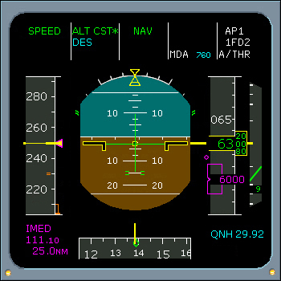

AP/FD Vertical Mode FMAs
ALT CST* - Managed Descent Mode Capture
When a MCDU managed altitude constraint is captured ALT CST* is displayed. Managed lateral (NAV) and vertical modes (DES or CLB or FINAL) must be engaged. Vertical managed modes take into account altitude and speed constraints.
When the current altitude and managed altitude constraint (MCDU) deviation are less than 20 feet, then the ALT CST annunciation is displayed.
|  |